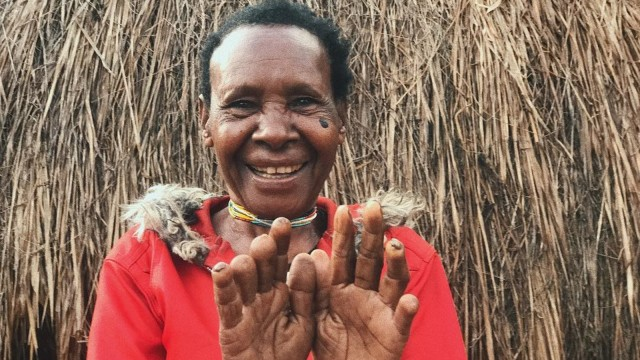
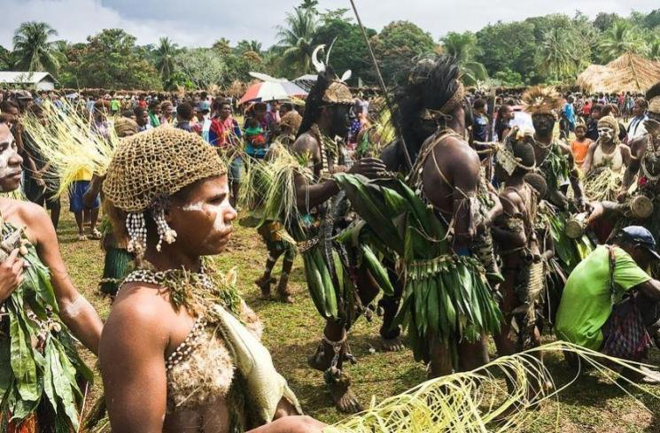
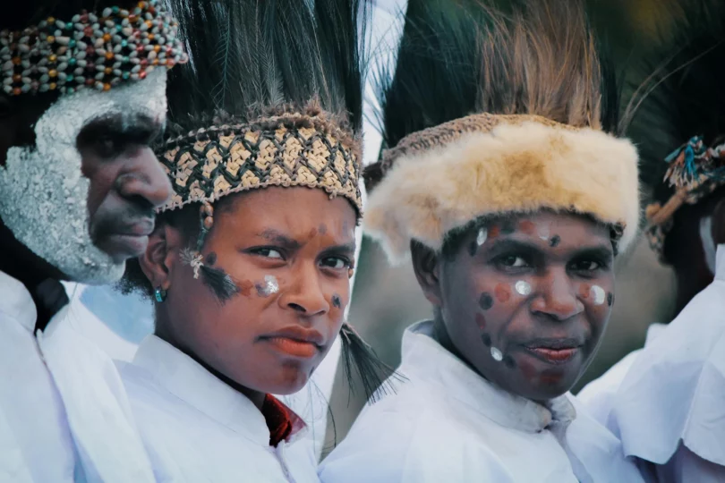
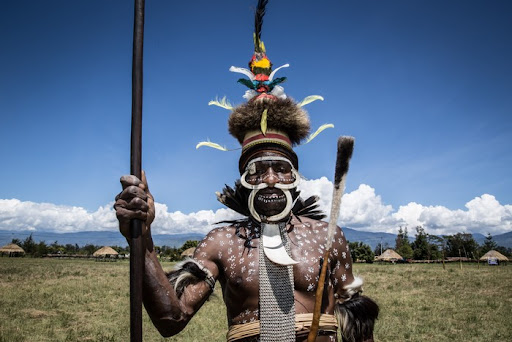

.jpg)

.jpg)

Salah satu tradisi suku Dani yang paling ekstrim dan bisa dibilang berbahaya adalah tradisi potong jari atau Iki Palek. Tradisi Iki Palek berasal dari suku Dani di Papua, di mana sebuah orang akan memotong salah satu jari. Tradisi ini terjadi ketika salah satu anggota keluarga mereka yaitu ayah, ibu, anak, atau adik yang meninggal dunia. Alasan memotong jari dilakukan karena ada tingginya rasa persaudaraan yang dimiliki oleh penduduk suku Dani, serta doa agar hal yang sama tidak terjadi kembali.
Kebanyakan tradisi potong jari di suku Dani hanya dilakukan oleh wanita. Namun beberapa laki-laki juga melakukannya untuk menunjukkan kesedihan yang mendalam. Laki-laki suku Dani umumnya tidak memotong jari mereka, tapi memotong kulit telinga mereka untuk menunjukkan kesedihan yang dirasakan. Tradisi potong jari suku Dani ini sudah diwariskan turun temurun dan hingga saat ini masih dilakukan. Walaupun pemerintah Papua dan Jayawijaya telah melarang untuk melakukan tradisi ini, namun penduduk suku Dani tetap melakukannya sebagai cara mengenang leluhur dan menyampaikan rasa belasungkawa.


Prosesnya sendiri dilakukan tanpa menggunakan obat bius atau anestesi, tetapi menggunakan alat tradisional seperti kapak batu atau pisau tajam. Ini meningkatkan kesan dramatis dari upacara tersebut. Namun, praktik potong jari Suku Dani menimbulkan kontroversi di zaman sekarang, terutama dari sudut pandang kesehatan dan hak asasi manusia. Banyak orang melihat potong jari sebagai bentuk kekerasan fisik yang tidak manusiawi dalam hak asasi manusia. Untuk menghentikan kebiasaan ini, pemerintah dan organisasi non-pemerintah telah menawarkan alternatif, seperti upacara pengganti yang lebih aman dan tidak melibatkan kekerasan fisik. Karena nilai-nilai tradisional dan kepercayaan budaya Suku Dani yang kuat, upaya-upaya ini seringkali menghadapi tantangan besar. Ini sangat penting untuk mempertimbangkan secara hati-hati dan seimbang ketika menghadapi masalah antara menjaga kesejahteraan anggota masyarakat dan melestarikan warisan budaya.


Tetapi, bagaimana jika budaya tersebut tentu tidak baik dan bahkan berdampak negatif untuk warga suku? Pemerintah dan organisasi terkait harus mampu bekerja sama dengan pemimpin adat dan tokoh masyarakat setempat untuk memberi bimbingan kepada suku Dani tentang praktik kesehatan yang lebih aman dan sesuai dengan hak asasi manusia yang universal. Oleh karena itu kita sebagai generasi muda harus mempertahankan warisan budaya yang penting, serta dapat dilakukan perubahan untuk memastikan bahwa praktik seperti potong jari suku Dani tidak lagi membahayakan kesehatan mental dan fisik anggota masyarakatnya. Kita harus ingat walaupun suatu budaya tidak baik, tentunya pasti ada makna mendalam pada setiap tindakan. Budaya yang berbahaya sebaiknya tidak secara langsung dibuang dan dilupakan, namun dicari kesempatan untuk melakukannya secara lebih manusiawi dan tidak menghilangkan maknanya. Walaupun ini adalah tantangan yang sulit, tetapi ini dapat juga menjadi kesempatan untuk menumbuhkan rasa hormat terhadap budaya yang beragam serta mempertahankan nilai-nilai dasar kemanusiaan.